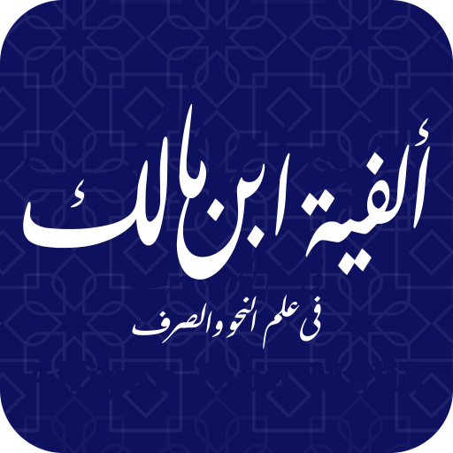

Terjemahan Alfiyah Ibnu Malik

Muqoddimah
Kalam dan Susunannya
Mu'rab dan Mabni
Nakirah dan Ma'rifat
Isim Alam
Isim Isyaroh
Isim Maushul
Ma'rifat dengan Alat Ta'rif
Ibtada’
Kana dan Saudara-Saudaranya
Maa, Laa, Laata, & In Beramal Laisa
Af’aalul Muqorabah
Inna dan Saudara-Saudaranya
Laa Nafi Jenis
Zhonna dan Saudara-Saudaranya
A’lama dan Aroo
Isim Fa’il
Naibul Fa’il
Istighol
Fi’il Muta’adi dan Fi’il Lazim
Tanaazu’ Dalam Amal
Maf’ul Muthlaq
Maf'ul Liajlih - Maf'ul Lah
Maf'ul Fih Zharaf
Maf'ul Mutlaq
Istitsna'
Haal
Tamyiz
Huruf Jarr
Idhofah
Mudhof Kepada Ya’ Mutakallim
Amal Mashdar
Amal Isim Fa’il
Bina’ Mashdar
Bina’ Isim Fa’il, Bina’ Isim Maf’ul
Shifat yang Menyerupai Isim Fa’il
Ta’ajjub
Ni’ma, Bi’sa dan Ma yang Menempati
Af’alut Tafdhil
Na’at
Taukid
‘Athaf Bayan
‘Athaf Nasaq
Badal
Nida’
Fashlun Tabi’ Munada
Munada Mudhof Pada Ya’ Mutakallim
Isim yang Hanya Berlaku Pada Nida’
Istighotsah
Nudbah
Tarkhim
Ikhtishosh
Tahdzir dan Ighro’
Isim Fi’il dan Isim Ashwat
Nun Taukid
Isim yang Tidak Munshorif
I’rab Fi’il
‘Amil Jazm
Fashl Lau
Amma, Laula dan Lauma
Khabar dari Alladzi dan Alif Lam
Hitungan
Kam, Ka’ayyin dan Kadza
Hikayah
Ta’nits
Maqshur dan Mamdud
Cara Mentatsniyah dan Menjama’kan
Jama’ Taksir
Tashghir
Nasab
Waqof
Imalah
Tashrif
Tambahan Hamzah Washal
Penggantian Huruf
Penggantian Wau dari Ya‘
Berkumpulnya Wau dan Ya’
Pemindahan Harakah Pada Huruf Mati
Penggantian Fa’ Ifti’ala Pada Ta’
Membuang Fa’ Fi’il Amar dan Fi’il
Idgham dan Khatimah Nadzam